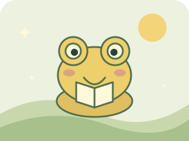
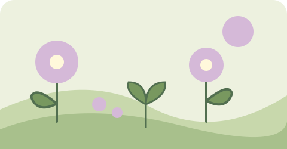

Vamos juntar descobertas?
Escolha os bloquinhos e veja o japonês ganhar forma.
Você está revisando uma etapa conhecida. As missões e as gotinhas de hoje continuam como estavam.
🗺️ Ver meu caminho de descobertas
Uma etapa por dia de estudo, no seu ritmo. Se um dia ficar pela metade, a próxima sugestão retoma essa etapa. Depois das oito etapas, as revisões se alternam.
Gato
Uma pista: são 2 bloquinhos.
Uma caixinha de possibilidades
Os sons moram em famílias de palavras. Escolha uma para explorar.
Meu jardim de palavras ✿
As palavras e frases que você já encontrou neste navegador.
Seu jardim está ganhando vida.
Plante ideias, cuide das flores e brinque com os amigos que chegam ao seu jardim.
Um cantinho feito por você
Arraste os ícones para organizar. Toque em uma peça para ver suas opções.
Arraste as peças diretamente. Pelo teclado: Alt + setas move a peça selecionada.
Seu jardim está pronto para brincar. Escolha uma ferramenta!
Enfeites custam de 6 a 32 gotinhas por unidade. Mover, guardar e recolocar suas peças é grátis. As peças que você já tinha continuam suas.

Vamos brincar com as palavras?
Três pequenas descobertas e um carinho para seu jardim.
Quem veio visitar?
Toque nas imagens para conhecer seus novos amigos.
Pequenas lembranças, grandes descobertas
Escolha um dia marcado para abrir sua lembrança ilustrada.

As estações seguem os meses do hemisfério sul.
✿ Flor: dia completo · 🌱 Broto: descobertas em andamento. Seu jardim permanece aqui quando você faz uma pausa.